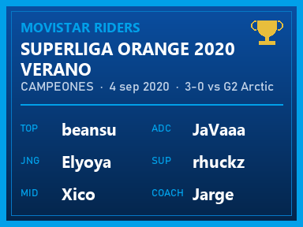
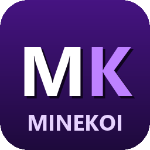
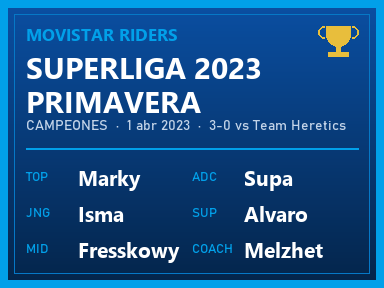
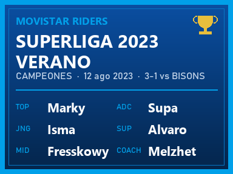
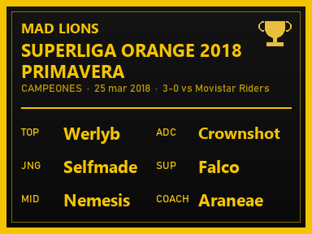
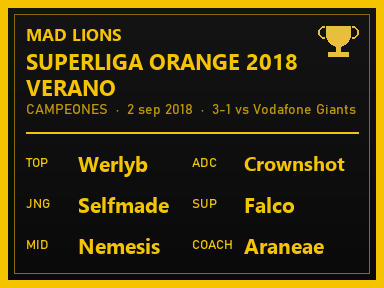
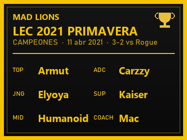
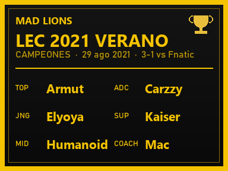
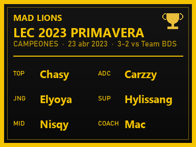
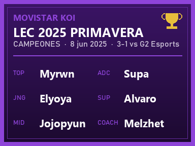

Movistar Riders
Superliga Orange 2020 Verano
- Topbeansu
- JunglaElyoya
- MidXico
- ADCJaVaaa
- Supportrhuckz
- CoachJarge

MineKOIServidor de Minecraft · Java 1.21.1
Un museo flotante con la historia de Movistar Riders, MAD Lions y KOI, y un cine gigante para ver juntos los partidos del Mundial.
Dirección: 72.62.29.18
El edificio está sobre una isla flotante, dentro de una cúpula de cristal. Todo está iluminado y el cielo es en HD, sin shaders.
Tres alas, una por club, con las copas de cada título y un cuadro con la plantilla campeona: 5 Superligas y 4 LEC.
Una pantalla de 32×18 bloques con nueve filas de butacas. Te sientas, y el partido se ve y se oye en directo dentro del juego.
Entras en modo aventura: paseas, te sientas y ves la pantalla. El edificio, las copas y la pantalla están protegidos.
Solo campeonatos de Superliga y LEC. Datos de Leaguepedia.

Movistar Riders

Movistar Riders

Movistar Riders

MAD Lions

MAD Lions

MAD Lions

MAD Lions

MAD Lions

Movistar KOI
Necesitas Minecraft Java Edition original (cuenta premium) y Prism Launcher, que es gratuito. Se tarda unos minutos.
Descárgalo de prismlauncher.org, ábrelo e inicia sesión con tu cuenta de Microsoft.
minekoi-1.6.0.mrpack. No hace falta abrirlo ni descomprimirlo.
Pulsa Añadir instancia → Importar, elige el archivo .mrpack y acepta. Prism instala Minecraft 1.21.1, NeoForge y todos los mods. Si no tienes Java 21, también lo descarga.
Opcional, pero recomendado: Editar → Ajustes → Memoria y pon 4096 MB como máximo.
Inicia la instancia. Verás el menú de MineKOI: pulsa Entrar al servidor. La primera vez el juego descarga un navegador para la pantalla del cine (unos cientos de MB), así que tarda un poco más.
¿Quieres el icono en Prism? Editar instancia → icono → Añadir y elige minekoi_icon.png.
Comprueba que entras con la instancia importada desde el modpack, no con un Minecraft normal, y que tu cuenta es original. Si sigue fallando, avisa al administrador.
La primera vez tarda en cargar mientras se descarga el navegador. Si después sigue negra, prueba a quitar Sodium de la carpeta mods de la instancia: es solo para rendimiento y no hace falta para jugar.
En Opciones → Paquetes de recursos, activa Fresh Skybox.
Tienes un modpack antiguo. Descarga el último desde esta página e impórtalo de nuevo.
No: los visitantes entran en modo aventura. Puedes pasear, sentarte en las butacas (clic derecho) y ver la pantalla.
MineKOI es gratis y lo seguirá siendo. Mantenerlo encendido tiene un coste (el servidor está en un VPS de pago), así que, si te apetece, puedes aportar lo que quieras. Es totalmente opcional: donar no da ninguna ventaja dentro del juego.
Donar con PayPal